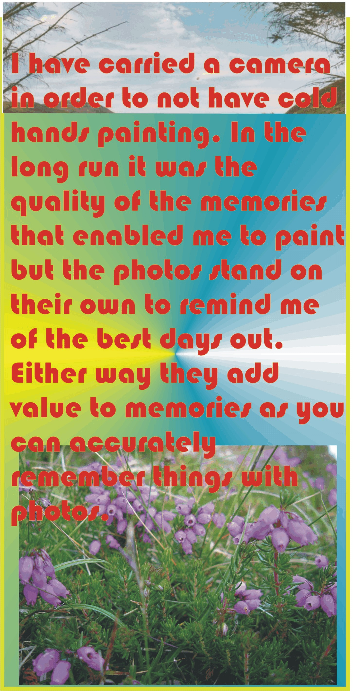
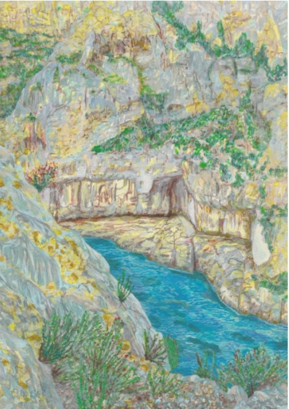
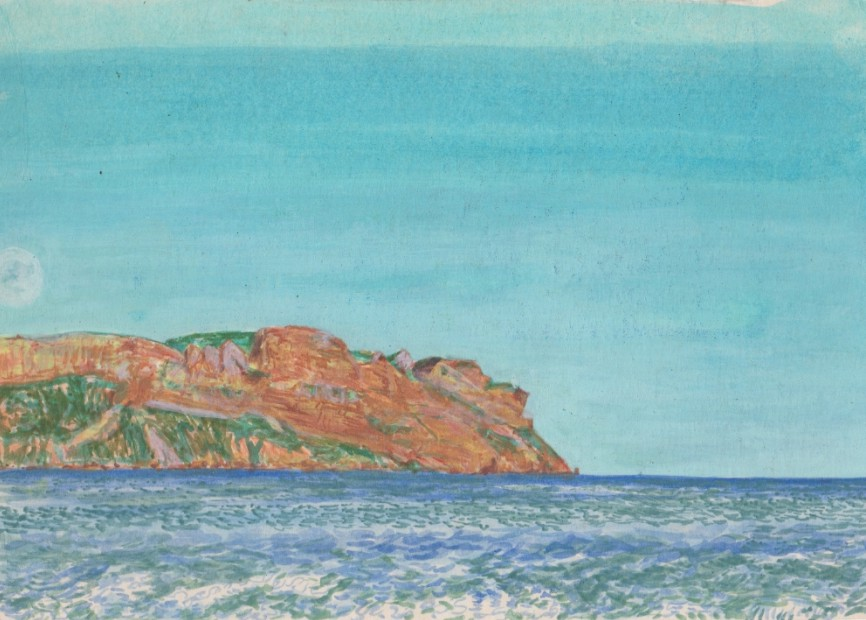
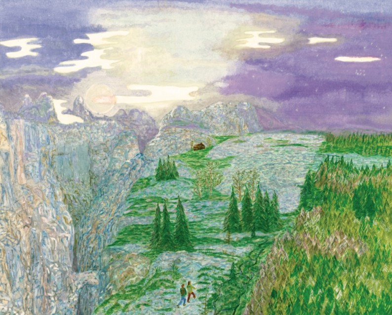
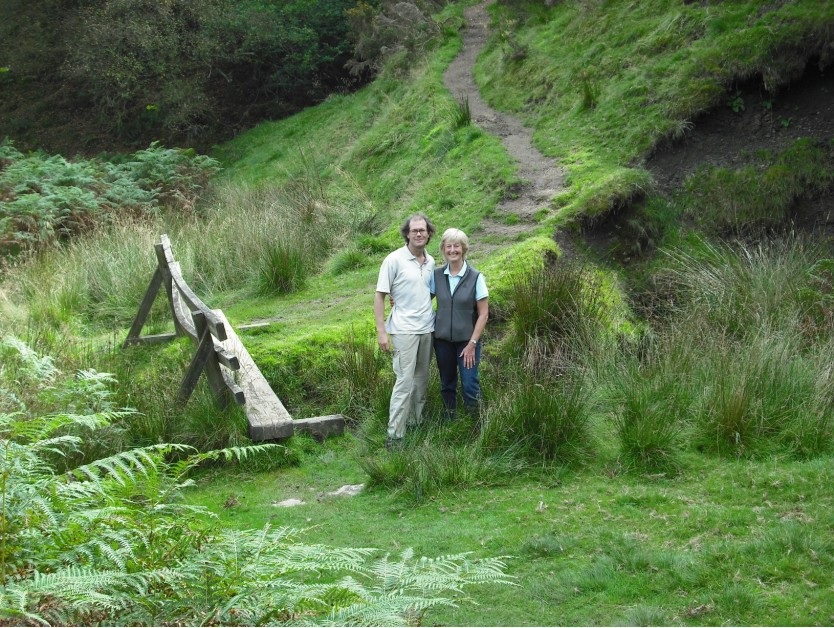
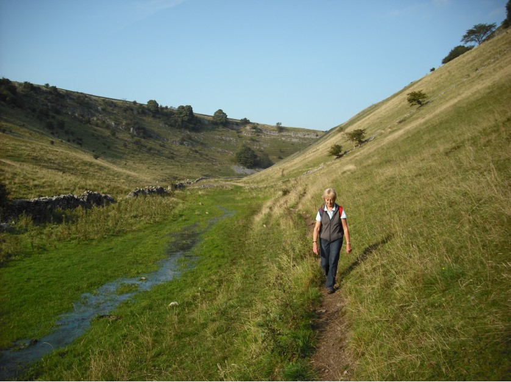
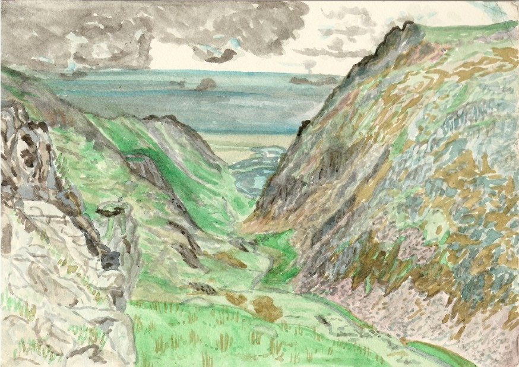
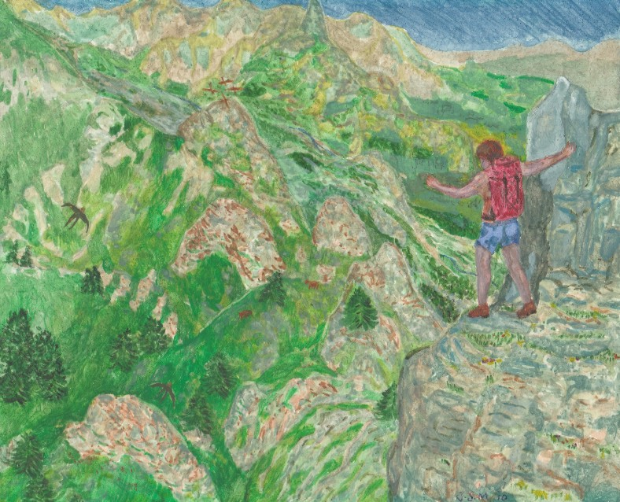
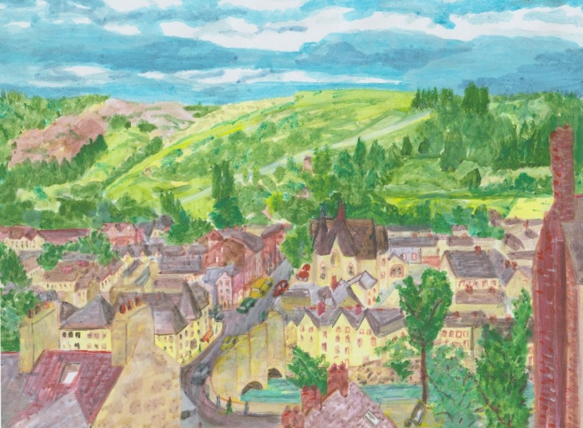
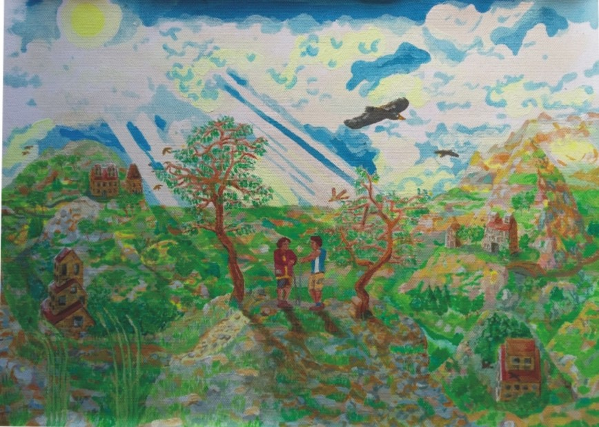

? Learning or training or teaching or practicing ?
Yes, I have climbed this and no it is not dangerous.
Really, what a question. No you have not! Really I have, I think so.
It's just a picture Quite. Do you just want me to imagine it without doing it at all then.

Somewhere to go. I am going to tell you
about instruction. I am not wanting to forget the reason to learn is
to have Somewhere in mind that is gorgeous for a trip

Achingly beautiful in the distance, just a bit too
far for my short holiday but a mystery remembered by this painting meant
a film set in the town behind it of the same name as the headland itself
was more interesting, indeed fascinating.

High away the places to stay are hard to beat though only
allow passing through.

Setting off the main section as the little bridge
shows civilization and paths are properly connected to make walking impact
invited and reminds you quietly that you are not alone.

The airy valleys in the limestone area of the Peak are as
subtle as the deep cut gorges are craggy. They are gloriously wild
with estate, human and farming incursion reflecting passion instead of
destruction. Good walking linking plentiful accomodation and camping.

A big atmospheric but above all a crag filled wonder the
Llanberis Pass with mountain crags on either side only passable
by the hardest routes in places.

ComeClimbWithMe.
This was what I hoped to call my business when it started 24 years ago.
Of course 'me', that is not really business-like as to sell it is 'you'
I suppose as your logo. Except that all guides or mountaineering professionals
are doing something me. It is not boring to be in outdoor instruction,
you really do gain a climbing partner even from a client. The leisure
industry is a happy place to be from where it starts. In a way it can
only go downhill if you wanted the job.
What separates the adventure salesperson is often character. The
personal approach is key to appeal as the company someone wants to be
with when having fun. In this reality you will appeal as someone already
known to their close ones, friends and family. Well it is not being
purchased if they were real friends, so it is worth adding that the
character seeked is probably at least just outside the normal social
group. Due to the sporting aspect, fitness is hard to avoid in the
promotion but the fact lingers that you need to be affective as a
companion since a hill or a mountain if presented inaccurately doesn’t
seem worth the detour, just hard and boring when on the easy sections.
My favorite walking ridge for a 20 hour journey. 2000m
plus cols and really lovely in the summer. A nighmarish peak on this walk
that I would never summit and daunting flanks of La Grivola ( name of
famous crampons manufacturer) often in view to puzzle over

Forceful, dominant, frivolous, charming. Strong, compelling, alluring.
Not daring, however compulsive would be okay, traditionally to my
upbringing from reading and a general sense of who is who. Character
flaws traditionally are what makes personality in the famed outdoor
person. Daring however is not professional client relationship despite
the allure I think. Claiming to be a sort of nature guide since most
happens outside, skilled at viewing sights off the main path, those
requiring a late return, adventure most probable. I see these expectations
as sensible in myself. The comparable experience is that my training
has always involved testing the water to base for the next level of
activity and measure of capability. Only by being appreciated will
you unlock these skills which experience has taught you to release.
You are very lucky to able to roam as work. Reliability is how many
will promote themselves, safe hands. High up the skills ladder. It is
best to arrive at what position a client is at themselves rather
than produce a skill session to dazzle though a business might thrive
on delivering action before learning. It makes sense those with a
natural leaning will stay. In Britain we have countryside everywhere which
can be preparation for serious days or weekends so the necessity of
travel is secondary to the necessity to train and prepare. Straight
in at the deep end this is 'Where is the most dazzling accessible hard
walking ?'
A strong contender is Glencoe, possibly the most attractive accessible
wonder in Britain where you can combine the view so easily but the
conquest is from my few vists I would call only achieved with serious
effort. A bit longer and less simple. Dazzling, well the glen has very
wide open slopes making a massive feeling and a tiny appearance of
human presence, both marvellous and quaint, tempting yet deceiving
for this is a long way you can see. The distances are longer than the
attraction may suggest. It is a full body experience to test the promise
with short routes, to get off the high ground perhaps not quicker than
to complete the circuit anyway as it is steep in so many places. Vertically
it is a kilometre horizontally you can see 30 just from the foot of the
glen so grand is the view. I find the biggest sky from then expansive
landscape very is seductive and in summer with long days the distances
are compelling. You will need 15 miles to complete any circuit over
the tops and 8.5 hours using Naismiths walking calculation like this.
3 miles an hour is 5 hours. 1 minute each 10m of ascent being 100 and
1 min each slow re-ascent or descent being 50, long enough to need 30
minutes of rest twice to hopefully not underestimate. 8.5 hours.
There is a great thriller film that begins on the mountains here
climbing a serious but accessible rock face. It goes straight into the
face of danger beautifully making you want to be on that rockface.
Slight mishaps needs to be handled with confidence to feel able to do
alot here. Multi-pitch climbing is best appreciated with confidence
I think than bluff. The walking is climbing in itself so instils the
same grand exhaustion and can remind a climber how important it is to
enjoy what they are doing.
Llangollen, not so expertly painted but
the landscape I liked. Onto and into N.Wales by pushbike. Finding
the sights off the almost not main roads.

So instruction. Who would have the best time? Would I share enough
or give. Unless with friends or a club it is a long journey to climb
a multipitch route having the rope always above you. Most people would
not imagine it otherwise until experienced upon seeing captivating film
sequences of friends making steep mountain faces look entertaining.
I am not qualified anyway to do this so luckily can talk about it while
walking as the best gauge to how interested you might be. To share the
trained decision with you to ake a turn on the sharp end of the rope does
not start with climbing but hillsides really are not so different in
practice. Modern climbing since ropes became dynamic and able to hold
a fall without the strong chance of breaking your back still is most
fun not falling off. Walking with a rope is a good idea and climbing
is where your would not consider moving without one. It is more practice
than theory because it is personal preparation. Glencoe is only an
example. In truth it is a difficult place to walk but it closely relates
to the path by your house if you practice and prepare so building
confidence.
I lived a summer in the North of Scotland and it makes me choke on
the possible. Long days and long light for travel on foot or by bike
and wide glens that go a long way. It is frequently a long way to
connect anything to the other roadside and it is odd to think these
big hills are small in certain worldly descriptions. Often the height
is less but the distance is still long. Shorter by half from the
roadside is An Teallach further North again though I managed to make
this mountain a full 40 mile walk on a few occasions. I was rewarded
twice to be above the clouds. It is amazing to not expect this. The
clouds did not seem lower or odd but then to get above them and find
it was not actually a cloudy day but a temperature inversion is
fabulous. It is a gift no-one else even knows about living underneath,
all on a climb of only 1000m above sea level. It happened to me 3
times in that year. By averaging from time at work and not walking
that makes 12 days like that, certainly a possibility to catch that
experience and a reason for an early start. It may not and should not
last all day but oddly can and you go back underneath to town aware
that an airplane experience is 900m above.
I was by Ullapool where I lived for a year. Beside the Assynt
Peninsular, north on the Torridonian Sandstone group. These mountains
are on top of the rock known as Lewesian Gneiss which is truly different
to walk on than anything else. Added to remoteness feeling is it's
rough uniform timeless feel for walking on. The Assynt is sometimes
peat but largely patterns of knock and lochan features that feel like
they have never known trees. Perhaps before the last ice age. Also
here you would find the fault line known as the Moine Thrust. It
makes for a third main landscape player of the region. Folded Westwards
metamorphic rocks reach up to a few kilometres of the coast leaving
a narrow region of Gneiss unfolded. I knew this was likely to be
the place of some photos I had once seen by some calling. The Assynt
is like seeing giant dolphins and whales riding on top of the
dry land. It is like 6 Ayers rocks and you can climb them without
breaking the law too.
My longest walk in the area setting off one evening, went over
Ben More Assynt and then into the Assynt topography malking 60 miles
non-stop barring short rests. I had walking legs here that just
had to get home as there are few cafes except in the villages and
there is not wild foraging either. You take in what you need to get
out. There are good bothies in the region too so good locations to
extend a trip comfortably. This region got me close to sea life and
folk stories in books that really had meaning in surroundings. I have
made a series of my own pictures to celebrate the effectiveness of a
book I have read a dozen times set in the coastal regions of Scotland
and Ireland including which seem like Ross-Shire. I was not really
aware of the Modern society in the area to the extent of discussing
the old traditions yet the magic is still there due to the power of
landscape and the smaller sizes of the settlements and what else I
don't know. It was exhausting getting about but with work I could do it
and go home and the hillwalkers and sailing networks are respected
as open paths and bothies show.
Were you to actually enjoy walking and find
life served it well,a good scenery and a strong tradition across the
generations with freedom to roam celebrated.

Immersion is the greatest pleasure and what makes me confident
to instruct and lead walks but is a journey of immediate rewards. So
the basic training or techniques practiced and respected will allow
you to take yourself on the trails.